Open to new opportunities
Hi, I'm Huynh.
I turn ideas into digital experiences.
A developer focused on polished interfaces, smooth experiences, and code that solves meaningful problems.
01 const developer = {
02 name: "Nguyen Duy Huynh",
03 role: "Developer",
04 interests: [
05 "Web", "AI", "Design"
06 ],
07 mindset: "Always learning",
08 curiosity: true
09 };
10
11 developer.create();◉ main*JavaScript UTF-8 Ln 11, Col 20
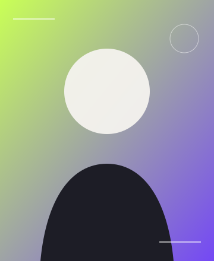
YOUR PHOTO</>
{ }
✦
Scroll to explore
01 / ABOUT
Good code starts with
a thoughtful question.
I enjoy solving real-world problems with technology and turning complicated ideas into simple, intuitive experiences.
I care about the balance between visual detail, performance, and usability. Every project is an opportunity to learn something new and create something genuinely useful.
Follow my journey →and building
completed
to be built
02 / EDUCATION
The places that shaped
how I think and grow.
01
2021 — 2024
HIGH SCHOOL
Thuc Hanh High School
Ho Chi Minh City University of Education · VietnamThe place where I built my foundations in mathematics and computer science.
02
2025 — PRESENT
COLLEGE · CURRENT
Irvine Valley College
Associate Degree in Computer Science · Irvine, CaliforniaCurrently pursuing an associate degree in computer science, with plans to transfer in Fall 2027 and continue toward a bachelor’s degree.
03 / CONTEST
Building under pressure,
growing as a team.
★BEST ENVIRONMENTAL
IMPACT AWARD
IMPACT AWARD
GREENAIR · SOFTWARE ENGINEER · 2026
GreenAIr
An air quality forecasting experience created by our three-person team during a hackathon.
As the team’s software engineer, I helped turn environmental data and machine learning into a clear air-quality warning experience. At AI Challenge – ECOGEN, our project received the Best Environmental Impact Award.
PythonFlaskTensorFlowTeamwork
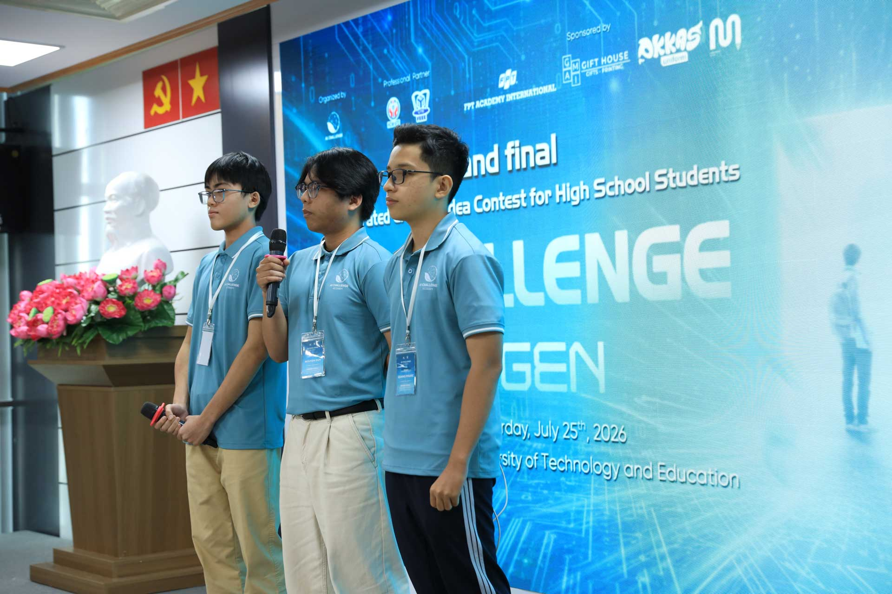
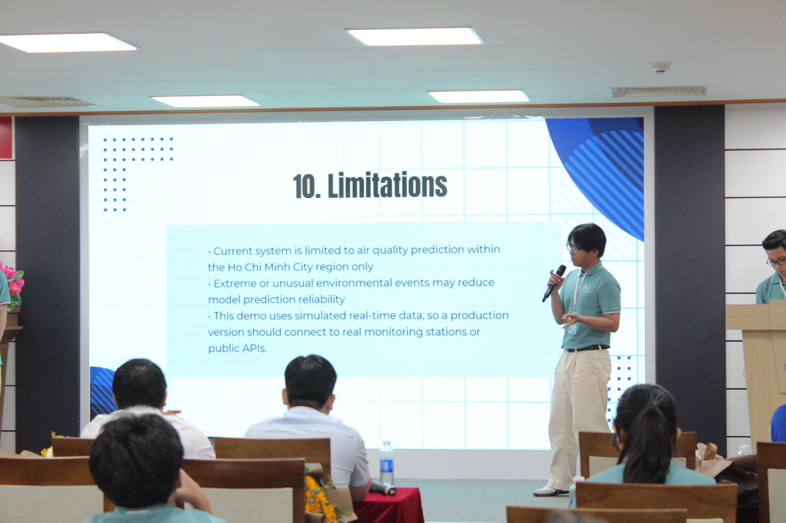
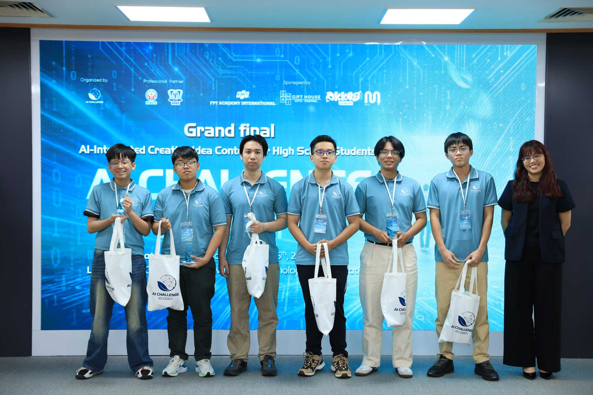
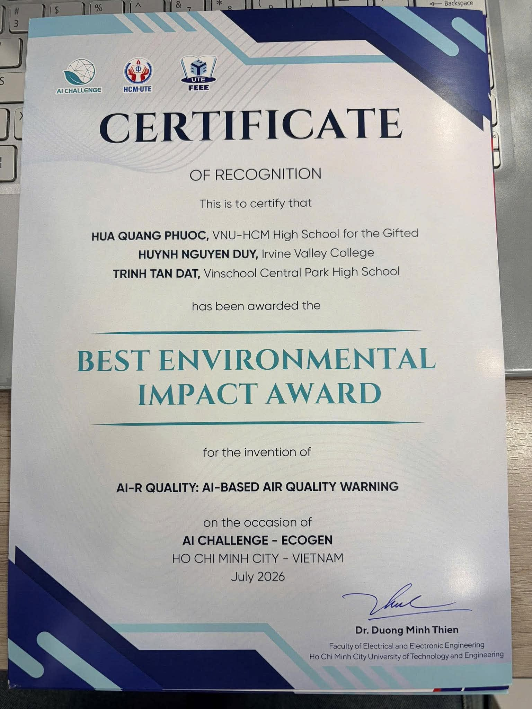
04 / PERSONAL PROJECTS
Products I have designed
and built from the ground up.
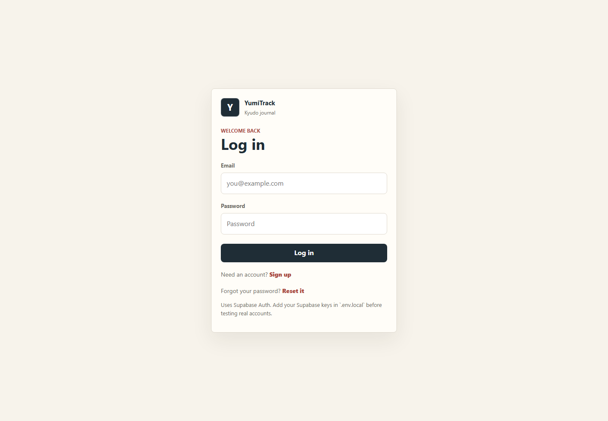
PERSONAL WEB APPLICATION · 2026
YumiTrack
A focused Kyudo practice journal for recording sessions, arrow results, notes, and long-term progress.Next.js 15React 19TypeScriptSupabaseRecharts
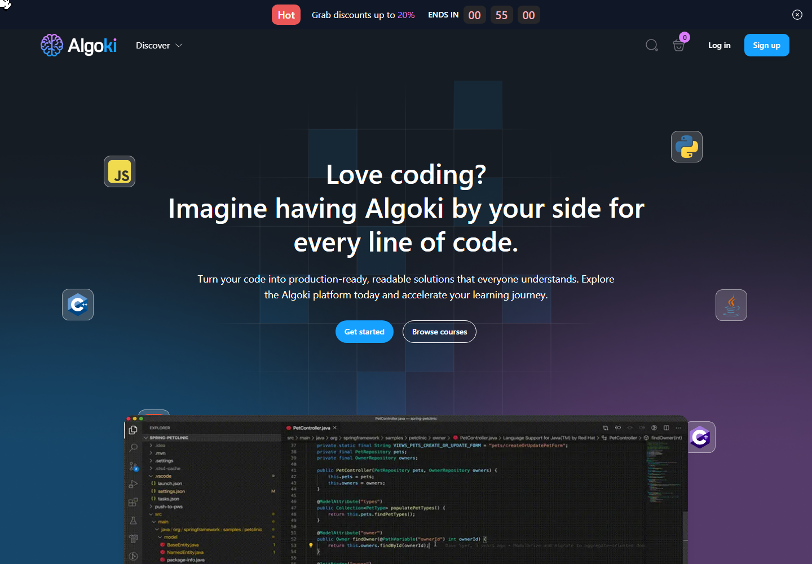
ONLINE LEARNING PLATFORM · 2025
Algoki
A modern programming education platform with interactive lessons, code exercises, learning progress, and multi-role dashboards.Next.js 15React 19TypeScriptTailwind CSSAnt DesignZustand
05 / CERTIFICATIONS
Milestones from my
continuous learning.
CERTIFICATE OF APPRECIATION
Math Olympiad & AI Training Program
xAI · VNU-HCM High School for the GiftedOpen Image ↗ONLINE COURSE CERTIFICATE · EDX
HarvardX CS50x
CS50's Introduction to Computer ScienceHarvardX · edXOpen PDF ↗ONLINE COURSE CERTIFICATE · EDX
UChicagoX QUAN11000
Quantum Computing for EveryoneUChicagoX · edXOpen PDF ↗06 / RESUME
My experience,
all in one place.
TECHNICAL RESUME · PDF
Want the complete picture?
Explore my education, technical skills, projects, and experience in a concise PDF resume.07 / SKILLS
Tools I use to turn ideas
into real products.
Frontend
HTML · CSS · JavaScript
React · Next.js · Tailwind
Backend
Node.js · Python · Flask
REST API · PostgreSQL
Tools
Git · GitHub · Figma
VS Code · Docker
08 / BEYOND THE CODE
What keeps me curious
away from the screen.
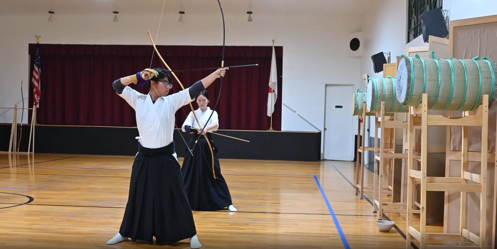
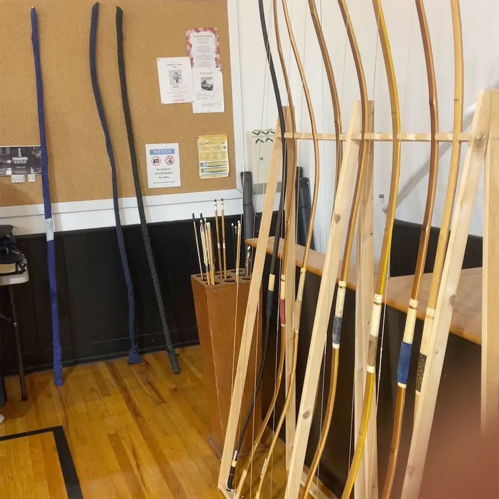
01 · DISCIPLINE
Kyudo
Japanese archery teaches me focus, calmness, discipline, and respect for every part of the process.
Focus · Form · Stillness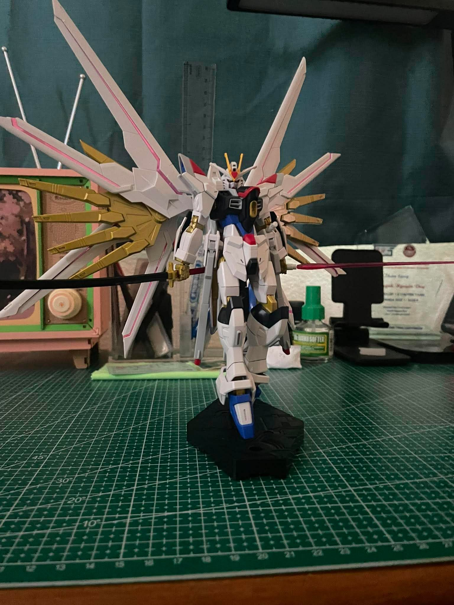
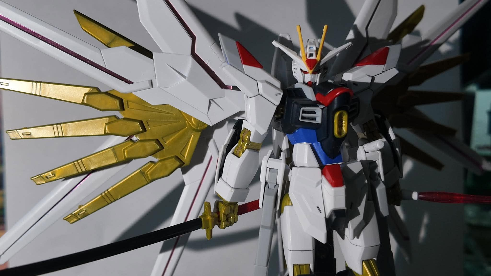
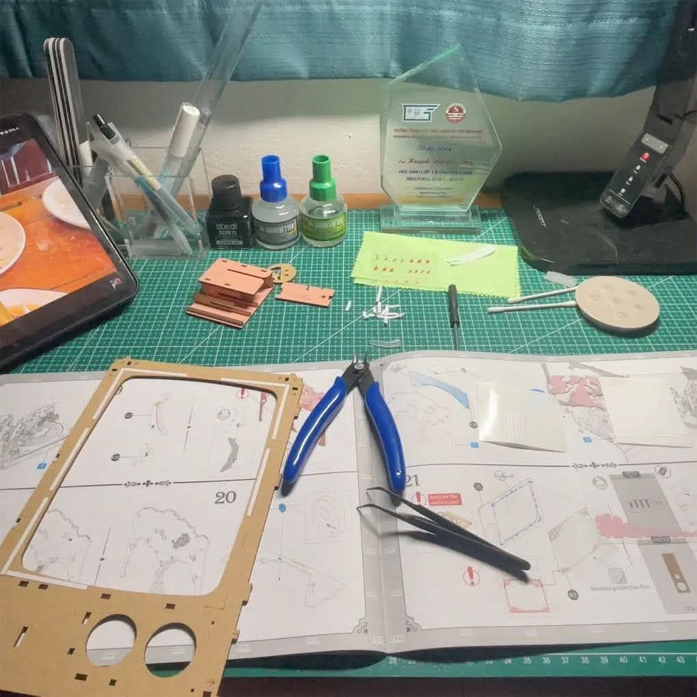
MY GUNDAM BUILD02 · CRAFT
Builder
Patience, precision, and the satisfaction of turning hundreds of tiny pieces into one complete build.
Patience · Precision · Creativity09 / CONTACT
Have an idea or just want to say hello?
Let's create something
meaningful together.
Nguyen Duy Huynh
star.huynhnguyenduy.3010@gmail.com ↗